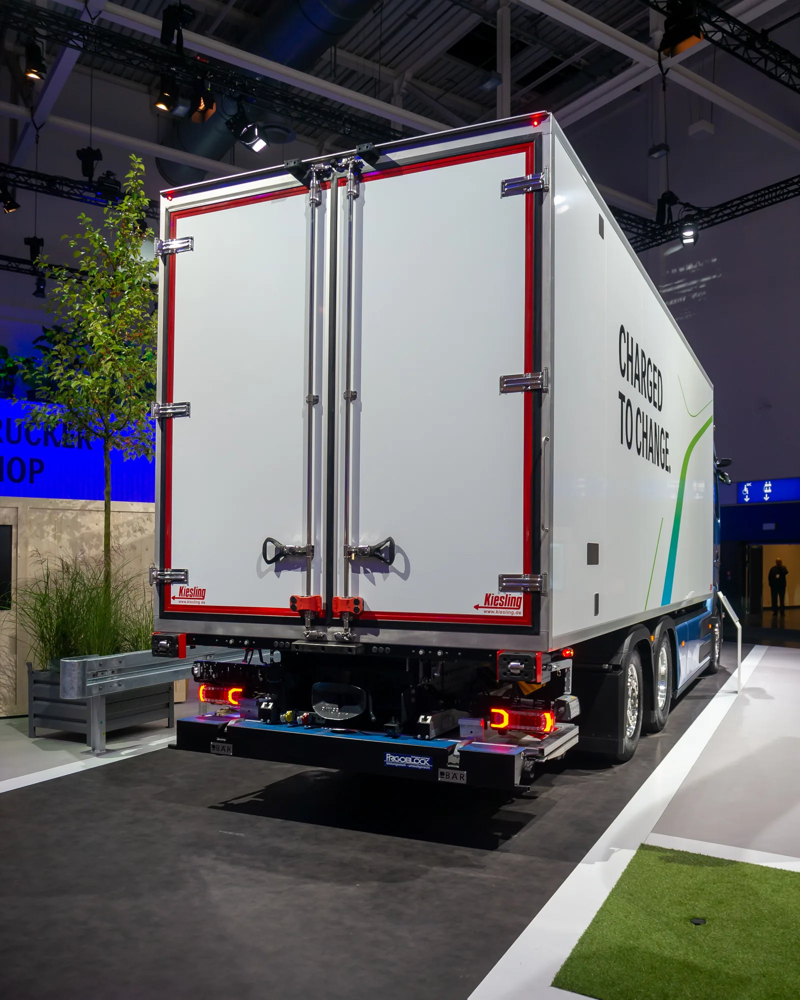
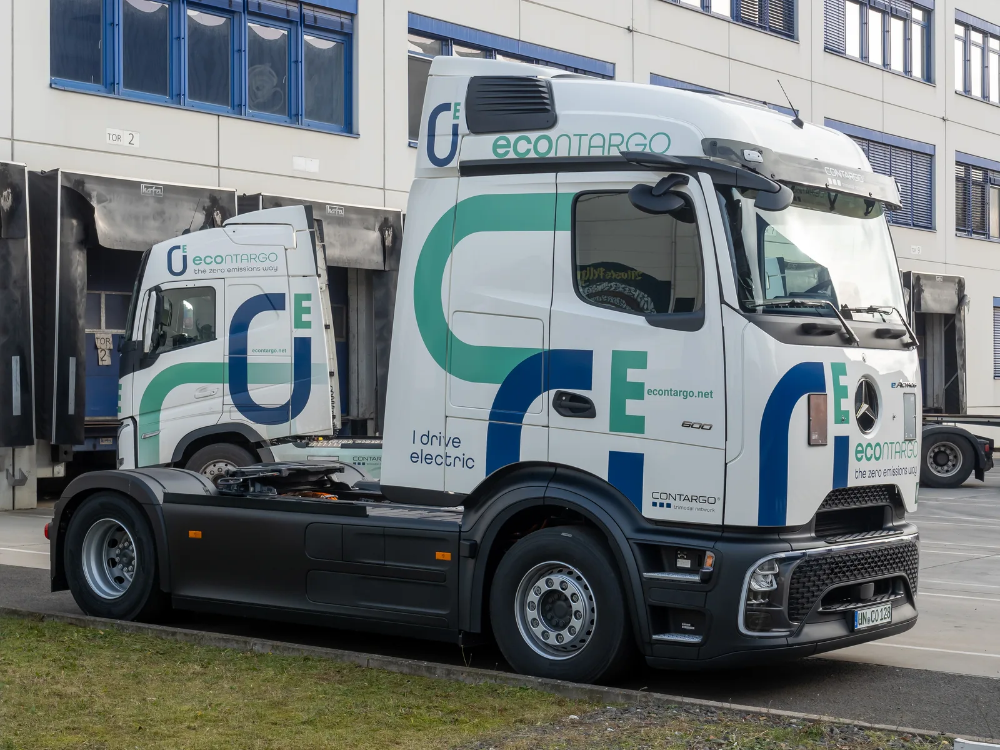
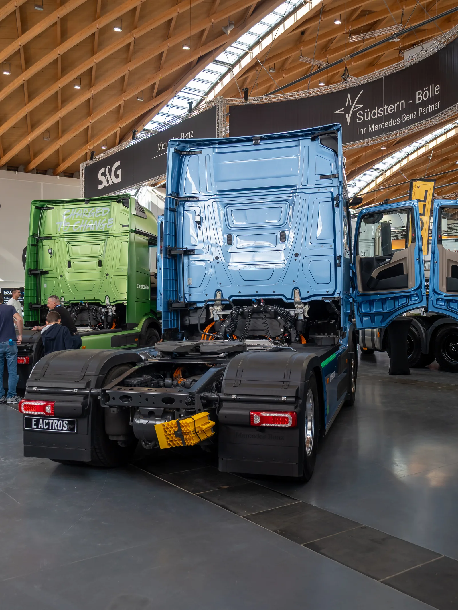
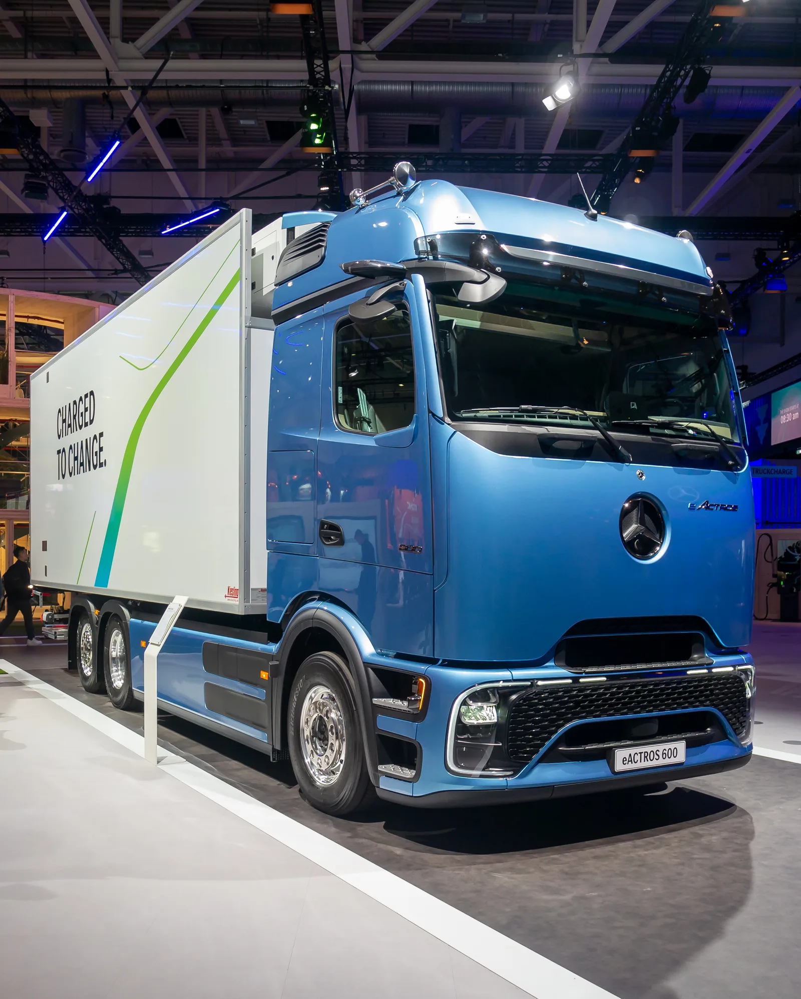
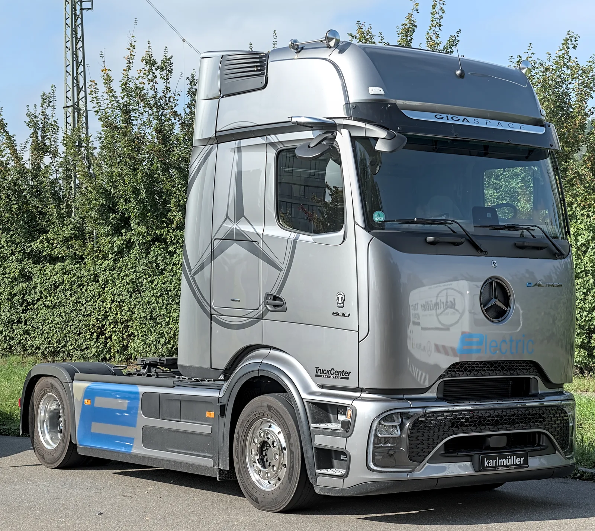

▲ 메르세데스-벤츠 eActros 600 전기 트럭. 아마존은 이 모델 27대를 독일 물류망에 투입했으며 연내 50대 이상으로 늘릴 계획이다 (사진=Wikimedia Commons, Matti Blume)
1. 아마존 물류창고 마당에 등장한 전기 세미트럭
택배 상자를 실은 트럭이 시동을 걸어도 엔진 소리가 나지 않는다. 아마존이 독일 물류망에 투입한 메르세데스-벤츠 eActros 600 전기 트럭 이야기다. 미국 매체 Electrek은 2026년 9월 11일(현지시간) 보도에서, 아마존이 현재까지 27대의 eActros 600을 인수해 독일 도로 위에서 실제 화물 운송에 투입했으며, 2026년 말까지 50대 이상으로 늘릴 계획이라고 전했다.
이번에 가동에 들어간 물량은 시작에 불과하다. 아마존과 다임러트럭(메르세데스-벤츠 트럭스 모회사)은 2025년 초 200대 이상의 eActros 600을 주문하는 계약을 맺었고, 이는 다임러트럭 창사 이래 최대 규모의 단일 전기 트럭 주문으로 기록됐다. 아마존은 이 트럭들을 물류센터 간 이동과 도시권 배송지를 잇는 '중거리 운송(middle-mile)' 노선에 투입하고 있다.
전기 트럭이 상용화 단계에 접어들었다는 상징적 장면이라는 점에서 업계의 주목도가 높다. 승용 전기차 시장이 정책 변수에 따라 출렁이는 사이, 물류업계는 대형 화주가 직접 전기 트럭을 대량 발주하며 전동화 속도를 끌어올리고 있다.

▲ 실제 도로를 주행 중인 eActros 600. 냉동탑차·박스형 등 다양한 상용 차체와 결합해 운용된다 (사진=Wikimedia Commons, Matti Blume)
2. eActros 600, 숫자로 보는 제원
eActros 600은 메르세데스-벤츠 트럭스가 내놓은 배터리 전기 장거리 트럭의 기함 모델이다. 이름의 '600'은 총 621kWh 용량의 LFP(리튬인산철) 배터리 3팩을 얹었다는 의미를 담고 있다. 1회 충전 주행거리는 500km이며, 법정 운전자 휴식 시간에 맞춰 중간 충전을 더하면 하루 1,000km 이상 운행도 가능하다는 게 제조사 설명이다.
| 항목 | 수치 |
|---|---|
| 배터리 용량 | 약 621kWh (LFP 3팩) |
| 1회 충전 주행거리 | 약 500km |
| 모터 출력 | 연속 536마력, 최대 순간 804마력 |
| 충전 방식 | CCS 완속(최대 400kW) / 메가와트 충전기 20~80% 약 30분 |
| 차량총중량(GCW) | 최대 44톤 |
| 아마존 평균 적재량 | 약 36톤(약 7만9,400파운드) |
| 생산 거점 | 독일 뵈르트(Wörth) 공장 |
아마존 측은 실제 운행 데이터를 인용해 트럭의 전비를 1.61kWh/마일 수준이라고 밝혔다. 구동계는 단일 차축에 얹힌 2개 전기모터와 4단 자동변속기로 구성되며, 배터리 셀은 안전성과 수명이 강점인 LFP(리튬인산철) 화학을 채택했다.
3. 아마존의 물류 전동화 전략 — '라스트마일'을 넘어 '미들마일'로
아마존은 그동안 배송 마지막 구간, 즉 라스트마일(last-mile) 전기밴 도입에 주력해 왔다. 리비안(Rivian)과 손잡고 전기 배송밴 수만 대를 굴려온 것이 대표적이다. 이번 eActros 600 대량 도입은 그 전동화 전선을 더 무겁고, 더 먼 거리를 뛰는 화물 운송 구간까지 확장했다는 의미를 갖는다.
아마존은 유럽 운송망의 전동화·탈탄소화에 10억 유로(약 1조5,000억 원) 이상을 투자하고 있으며, 이 가운데 4억 유로(약 6,000억 원) 이상이 독일 운영에 집중된다. 아마존 측은 이 투자가 독일 경제에 약 30억 유로 기여, 최대 3만6,000개 일자리를 지원하는 효과로 이어질 것으로 추산한다. 아마존 유럽 공식 발표에서 확인 가능
대형 화주가 직접 전기 트럭을 대량 발주하는 방식은 트럭 제조사 입장에서도 의미가 크다. 초기 수요가 불확실한 신차종에 '앵커 고객'이 붙으면 생산량 확대와 충전 인프라 투자를 동시에 정당화할 수 있기 때문이다. 아마존-다임러트럭의 200대 계약이 업계에서 '최대 규모'로 회자되는 이유다.

▲ eActros 600 트랙터 유닛의 후면부. 배터리팩과 고전압 케이블이 캡 하단에 배치된 구조가 드러난다 (사진=Wikimedia Commons, Matti Blume)

▲ eActros 600은 냉동탑차 등 다양한 상용 차체 옵션으로 공급된다 (사진=Wikimedia Commons, Matti Blume)
4. 독일 전역에 깔리는 충전 인프라
전기 세미트럭 확산의 최대 걸림돌은 차량 자체보다 충전 인프라다. 아마존은 이를 해결하기 위해 자체 물류거점 곳곳에 급속 충전기 수백 대를 직접 설치하고 있다. 회사 측에 따르면 이 충전기들은 배터리를 20%에서 80%까지 1시간 조금 넘는 시간에 채울 수 있는 사양이다.
이는 유럽연합이 추진 중인 대체연료 인프라 규정(AFIR)과도 궤를 같이한다. AFIR는 주요 화물 간선도로(TEN-T 코리도)를 따라 일정 간격으로 고출력 충전소를 의무 설치하도록 규정하고 있어, 아마존 같은 대형 화주의 자체 충전망 투자가 공공 인프라 확충 속도보다 앞서가는 모양새다.
다만 트럭 한 대당 충전 시간이 1시간 안팎이라는 점은 여전히 물류 스케줄링에 변수로 작용한다. 아마존이 eActros 600을 장거리 간선이 아닌 중거리·도시권 노선에 우선 배치한 것도, 법정 운전자 휴게시간과 충전 시간을 맞물리게 해 운행 효율을 극대화하려는 계산으로 풀이된다.
5. 글로벌 전기 트럭 시장, 각축전이 시작됐다
eActros 600은 더 이상 '유일한 선택지'가 아니다. 볼보트럭은 FH 에어로 일렉트릭을 앞세워 최대 600km 주행거리, 약 40분 충전을 내세우고 있고, 스카니아·다프(DAF) 등 유럽 전통 강자들도 중대형 전기 트럭 라인업을 순차적으로 늘리는 중이다. 전동화 전환이 늦었던 테슬라 세미(Semi)도 2026년 9월 하노버 IAA 트랜스포테이션에서 유럽 사양과 출시 일정을 공개할 예정이다. 공개된 스펙은 주행거리 약 550km, 공차중량 약 9.1톤, 최대 800kW 메가차저 충전을 지원하는 수준으로 알려졌다.
다만 테슬라의 '지각 출시'가 오히려 유럽 업체들에 시간을 벌어줬다는 평가도 나온다. 볼보·스카니아·다임러트럭은 그 사이 유럽 물류사들과의 관계를 다지고, 충전 인프라까지 함께 구축해 온 만큼 선점 효과가 상당하다는 분석이다. 중국에서는 BYD가 선전 항만 물류 노선을 중심으로 전기 상용차 보급을 주도하며 별도의 생태계를 키우고 있다.
다만 실제 도로 위 존재감은 아직 크지 않다. 유럽자동차공업협회(ACEA) 집계를 보면 2026년 상반기 EU 역내 배터리 전기 트럭의 신규 등록 비중은 4.8%로, 1년 전(3.6%)보다는 늘었지만 여전히 신규 등록 트럭 20대 중 1대꼴에도 못 미친다. 그나마도 독일·프랑스 두 나라가 전체 등록의 71%를 차지할 만큼 지역 편차가 크다. 이런 흐름에서 아마존처럼 한 번에 200대 이상을 발주하는 '메가 화주'의 등장은 통계 수치 이상의 상징성을 갖는다.
전기 트럭의 경제성을 둘러싼 셈법도 바뀌는 중이다. EU는 2028년부터 디젤 연료에 별도의 탄소배출권거래제(ETS2) 부담금을 매길 예정이고, 회원국들은 고속도로 통행료(유로비네트)를 이산화탄소 배출량에 연동해 차등화하고 있다. 무공해 대형차에 대한 통행료 면제 조치도 2031년 6월까지 연장하기로 했다. 이런 정책이 겹치면 2030년 이전에 전기 트럭의 총소유비용(TCO)이 디젤 트럭과 맞먹거나 더 낮아질 수 있다는 전망이 업계에서 나온다.
시장조사업체들은 글로벌 대형 전기트럭 시장이 2026년 148억 달러 규모에서 매년 큰 폭으로 성장할 것으로 전망한다. 아마존이라는 '메가 화주'가 벤츠를 택한 이번 사례는, 완성차 업체 간 경쟁을 넘어 화주-제조사 간 대규모 장기계약이 시장 판도를 좌우하는 새로운 국면에 들어섰음을 보여준다.

▲ 2025년 독일 튀빙겐 오토모빌 전시회에 전시된 eActros 600 (사진=Wikimedia Commons, Matti Blume)